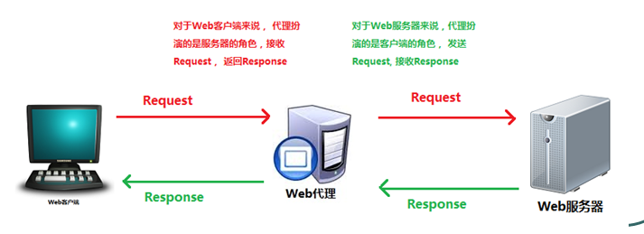
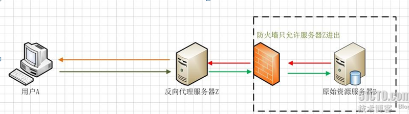
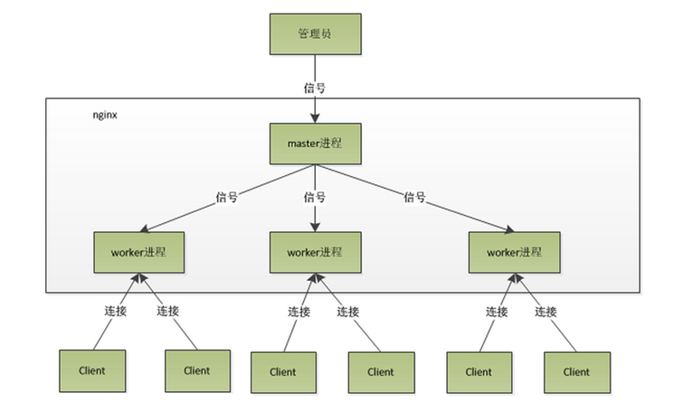

Nginx是什么？
Nginx就是反向代理服务器。
首先我们先来看看什么是代理服务器，代理服务器一般是指局域网内部的机器通过代理服务发送请求到互联网上的服务器，代理服务器一般作用于客户端。比如GoAgent，FQ神器。

一个完整的代理请求过程为：客户端首先与代理服务器创建连接，然后根据代理服务器所使用的代理协议，请求对目标服务器创建连接、或则获得目标服务器的指定资源。Web代理服务器是网络的中间实体。代理位于Web客户端和Web服务器之间，扮演“中间人”的角色。
HTTP的代理服务器既是Web服务器又是Web客户端。
代理服务器是介于客户端和Web服务器之间的另一台服务器，有了它之后，浏览器不是直接到Web服务器去取回网页，而是通过向代理服务器发送请求，信号会先送到代理服务器，由代理服务器来取回浏览器所需要的信息并传送给你的浏览器。
正向代理是一个位于客户端和原始服务器之间的服务器，为了从原始服务器取的内容，客户端向代理发送一个请求并指定目标（原始服务器），然后代理向原始服务器转交请求并将获得的内容返回给客户端，客户端必须要进行一些特别的设置才能使用正向代理。
反向代理服务器：在服务器端接收客户端的请求，然后把请求分发给具体的服务器进行处理，然后再将服务器的响应结果反馈给客户端。Nginx就是其中的一种反向代理服务器软件。
Nginx：Nginx（“engine x”），Nginx是俄罗斯人Igor Sysoev(塞索耶夫)编写的一款高性能的 HTTP 和反向代理服务器。也是一个IMAP/POP3/SMTP代理服务器，也就是说，Nginx本身就可以托管网站，进行HTTP服务处理，也可以作为反向代理服务器使用。
正向代理客户端必须设置正向代理服务器，当然前提是要知道正向代理服务器的IP地址，还有代理程序的端口。
反向代理正好与正向代理相反，对于客户端而言代理服务器就像是原始服务器，并且客户端不需要进行任何特别的设置。客户端向反向代理的命名空间中的内容发送普通请求，接着反向代理将判断向哪个原始服务器转交请求，并将获得的内容返回给客户端。

用户A始终认为它访问的是原始服务器B而不是代理服务器Z，但实际上反向代理服务器接受用户A的应答，
从原始资源服务器B中取得用户A的需求资源，然后发送给用户A。由于防火墙的作用，只允许代理服务器Z访问原始资源服务器B。尽管在这个虚拟的环境下，防火墙和反向代理的共同作用保护了原始资源服务器B，但用户A并不知情。
简单的说：
正向代理：客户端知道服务器端，通过代理端连接服务器端。代理端代理的是服务器端。
反向代理：所谓反向，是对正向而言的。服务器端知道客户端，客户端不知道服务器端，通过代理端连接服务器端。代理端代理的是客户端。代理对象刚好相反，所以叫反向代理。
Nginx的应用现状
Nginx 已经在俄罗斯最大的门户网站── Rambler Media（www.rambler.ru）上运行了3年时间，同时俄罗斯超过20%的虚拟主机平台采用Nginx作为反向代理服务器。
在国内，已经有 淘宝、新浪博客、新浪播客、网易新闻、六间房、56.com、Discuz!、水木社区、豆瓣、YUPOO、海内、迅雷在线 等多家网站使用 Nginx 作为Web服务器或反向代理服务器。
Nginx的特点
（1）跨平台：Nginx 可以在大多数 Unix like OS编译运行，而且也有Windows的移植版本。
（2）配置异常简单，非常容易上手。配置风格跟程序开发一样，神一般的配置
（3）非阻塞、高并发连接：数据复制时，磁盘I/O的第一阶段是非阻塞的。官方测试能够支撑5万并发连接，在实际生产环境中跑到2～3万并发连接数.(这得益于Nginx使用了最新的epoll模型)
（4）事件驱动：通信机制采用epoll模型，支持更大的并发连接。
（5）master/worker结构：一个master进程，生成一个或多个worker进程
（6）内存消耗小：处理大并发的请求内存消耗非常小。在3万并发连接下，开启的10个Nginx 进程才消耗150M内存（15M*10=150M）
（7）成本低廉：Nginx为开源软件，可以免费使用。而购买F5 BIG-IP、NetScaler等硬件负载均衡交换机则需要十多万至几十万人民币
（8）内置的健康检查功能：如果 Nginx Proxy 后端的某台 Web 服务器宕机了，不会影响前端访问。
（9）节省带宽：支持 GZIP 压缩，可以添加浏览器本地缓存的 Header 头。
（10）稳定性高：用于反向代理，宕机的概率微乎其微
如何使用事件驱动呢？
Nginx的事件处理机制：
对于一个基本的web服务器来说，事件通常有三种类型，网络事件、信号、定时器。
首先看一个请求的基本过程：建立连接—接收数据—发送数据 。
再次看系统底层的操作 ：上述过程（建立连接—接收数据—发送数据）在系统底层就是读写事件。
1）如果采用阻塞调用的方式，当读写事件没有准备好时，必然不能够进行读写事件，那么久只好等待，等事件准备好了，才能进行读写事件。那么请求就会被耽搁 。阻塞调用会进入内核等待，cpu就会让出去给别人用了，对单线程的worker来说，显然不合适，当网络事 件越多时，大家都在等待呢，cpu空闲下来没人用，cpu利用率自然上不去了，更别谈高并发了 。
2）既然没有准备好阻塞调用不行，那么采用非阻塞方式。非阻塞就是，事件，马上返回EAGAIN，告诉你，事件还没准备好呢，你慌什么，过会再来吧。好吧，你过一会，再来检查一下事件，直到事件准备好了为止，在这期间，你就可以先去做其它事情，然后再来看看事 件好了没。虽然不阻塞了，但你得不时地过来检查一下事件的状态，你可以做更多的事情了，但带来的开销也是不小的
小结：非阻塞通过不断检查事件的状态来判断是否进行读写操作，这样带来的开销很大。
3）因此才有了异步非阻塞的事件处理机制。具体到系统调用就是像select/poll/epoll/kqueue这样的系统调用。他们提供了一种机制，让你可以同时监控多个事件，调用他们是阻塞的，但可以设置超时时间，在超时时间之内，如果有事件准备好了，就返回。这种机制解决了我们上面两个问题。
以epoll为例：当事件没有准备好时，就放入epoll(队列)里面。如果有事件准备好了，那么就去处理；如果事件返回的是EAGAIN，那么继续将其放入epoll里面。从而，只要有事件准备好了，我们就去处理她，只有当所有时间都没有准备好时，才在epoll里面等着。这样 ，我们就可以并发处理大量的并发了，当然，这里的并发请求，是指未处理完的请求，线程只有一个，所以同时能处理的请求当然只有一个了，只是在请求间进行不断地切换而已，切换也是因为异步事件未准备好，而主动让出的。这里的切换是没有任何代价，你可以理 解为循环处理多个准备好的事件，事实上就是这样的。
4）与多线程的比较：
与多线程相比，这种事件处理方式是有很大的优势的，不需要创建线程，每个请求占用的内存也很少，没有上下文切换，事件处理非常的轻量级。并发数再多也不会导致无谓的资源浪费（上下文切换）。
小结：通过异步非阻塞的事件处理机制，Nginx实现由进程循环处理多个准备好的事件，从而实现高并发和轻量级。
Nginx的不为人知的特点
（1）nginx代理和后端web服务器间无需长连接；
（2）接收用户请求是异步的，即先将用户请求全部接收下来，再一次性发送后后端web服务器，极大的减轻后端web服务器的压力
（3）发送响应报文时，是边接收来自后端web服务器的数据，边发送给客户端的
（4）网络依赖型低。NGINX对网络的依赖程度非常低，理论上讲，只要能够ping通就可以实施负载均衡，而且可以有效区分内网和外网流量
（5）支持服务器检测。NGINX能够根据应用服务器处理页面返回的状态码、超时信息等检测服务器是否出现故障，并及时返回错误的请求重新提交到其它节点上
Nginx的内部(进程)模型

nginx是以多进程的方式来工作的，当然nginx也是支持多线程的方式的,只是我们主流的方式还是多进程的方式，也是nginx的默认方式。nginx采用多进程的方式有诸多好处 .
(1) nginx在启动后，会有一个master进程和多个worker进程。master进程主要用来管理worker进程，包含：接收来自外界的信号，向各worker进程发送信号，监控 worker进程的运行状态,当worker进程退出后(异常情况下)，会自动重新启动新的worker进程。而基本的网 络事件，则是放在worker进程中来处理了 。多个worker进程之间是对等的，他们同等竞争来自客户端的请求，各进程互相之间是独立的 。一个请求，只可能在一个worker进程中处理，一个worker进程，不可能处理其它进程的请求。 worker进程的个数是可以设置的，一般我们会设置与机器cpu核数一致，这里面的原因与nginx的进程模型以及事件处理模型是分不开的 。
(2)Master接收到信号以后怎样进行处理（./nginx -s reload ）?首先master进程在接到信号后，会先重新加载配置文件，然后再启动新的进程，并向所有老的进程发送信号，告诉他们可以光荣退休了。新的进程在启动后，就开始接收新的请求，而老的进程在收到来自 master的信号后，就不再接收新的请求，并且在当前进程中的所有未处理完的请求处理完成后，再退出 .
(3) worker进程又是如何处理请求的呢？我们前面有提到，worker进程之间是平等的，每个进程，处理请求的机会也是一样的。当我们提供80端口的http服务时，一个连接请求过来，每个进程都有可能处理这个连接，怎么做到的呢？首先，每个worker进程都是从master 进程fork(分配)过来，在master进程里面，先建立好需要listen的socket之后，然后再fork出多个worker进程，这样每个worker进程都可以去accept这个socket(当然不是同一个socket，只是每个进程的这个socket会监控在同一个ip地址与端口，这个在网络协议里面是允许的)。一般来说，当一个连接进来后，所有在accept在这个socket上面的进程，都会收到通知，而只有一个进程可以accept这个连接，其它的则accept失败，这是所谓的惊群现象。当然，nginx也不会视而不见，所以nginx提供了一个accept_mutex这个东西，从名字上，我们可以看这是一个加在accept上的一把共享锁。有了这把锁之后，同一时刻，就只会有一个进程在accpet连接，这样就不会有惊群问题了。accept_mutex是一个可控选项，我们可以显示地关掉，默认是打开的。当一个worker进程在accept这个连接之后，就开始读取请求，解析请求，处理请求，产生数据后，再返回给客户端，最后才断开连接，这样一个完整的请求就是这样的了。我们可以看到，一个请求，完全由worker进程来处理，而且只在一个worker进程中处理。
(4)nginx采用这种进程模型有什么好处呢？采用独立的进程，可以让互相之间不会影响，一个进程退出后，其它进程还在工作，服务不会中断，master进程则很快重新启动新的worker进程。当然，worker进程的异常退出，肯定是程序有bug了，异常退出，会导致当前worker上的所有请求失败，不过不会影响到所有请求，所以降低了风险。当然，好处还有很多，大家可以慢慢体会。
(5)有人可能要问了，nginx采用多worker的方式来处理请求，每个worker里面只有一个主线程，那能够处理的并发数很有限啊，多少个worker就能处理多少个并发，何来高并发呢？非也，这就是nginx的高明之处，nginx采用了异步非阻塞的方式来处理请求，也就是说，nginx是可以同时处理成千上万个请求的 .对于IIS服务器每个请求会独占一个工作线程，当并发数上到几千时，就同时有几千的线程在处理请求了。这对操作系统来说，是个不小的挑战，线程带来的内存占用非常大，线程的上下文切换带来的cpu开销很大，自然性能就上不去了，而这些开销完全是没有意义的。我们之前说过，推荐设置worker的个数为cpu的核数，在这里就很容易理解了，更多的worker数，只会导致进程来竞争cpu资源了，从而带来不必要的上下文切换。而且，nginx为了更好的利用多核特性，提供了cpu亲缘性的绑定选项，我们可以将某一个进程绑定在某一个核上，这样就不会因为进程的切换带来cache的失效
Nginx是如何处理一个请求
首先，nginx在启动时，会解析配置文件，得到需要监听的端口与ip地址，然后在nginx的master进程里面，先初始化好这个监控的socket(创建socket，设置addrreuse等选项，绑定到指定的ip地址端口，再listen)，然后再fork(一个现有进程可以调用fork函数创建一个 新进程。由fork创建的新进程被称为子进程 )出多个子进程出来，然后子进程会竞争accept新的连接。此时，客户端就可以向nginx发起连接了。当客户端与nginx进行三次握手，与nginx建立好一个连接后，此时，某一个子进程会accept成功，得到这个建立好的连接的 socket，然后创建nginx对连接的封装，即ngx_connection_t结构体。接着，设置读写事件处理函数并添加读写事件来与客户端进行数据的交换。最后，nginx或客户端来主动关掉连接，到此，一个连接就寿终正寝了。
当然，nginx也是可以作为客户端来请求其它server的数据的（如upstream模块），此时，与其它server创建的连接，也封装在ngx_connection_t中。作为客户端，nginx先获取一个ngx_connection_t结构体，然后创建socket，并设置socket的属性（ 比如非阻塞）。然后再通过添加读写事件，调用connect/read/write来调用连接，最后关掉连接，并释放ngx_connection_t。
nginx在实现时，是通过一个连接池来管理的，每个worker进程都有一个独立的连接池，连接池的大小是worker_connections。这里的连接池里面保存的其实不是真实的连接，它只是一个worker_connections大小的一个ngx_connection_t结构的数组。并且，nginx会通过一个链表free_connections来保存所有的空闲ngx_connection_t，每次获取一个连接时，就从空闲连接链表中获取一个，用完后，再放回空闲连接链表里面。
在这里，很多人会误解worker_connections这个参数的意思，认为这个值就是nginx所能建立连接的最大值。其实不然，这个值是表示每个worker进程所能建立连接的最大值，所以，一个nginx能建立的最大连接数，应该是worker_connections worker_processes。当然 ，这里说的是最大连接数，对于HTTP请求本地资源来说，能够支持的最大并发数量是worker_connections worker_processes，而如果是HTTP作为反向代理来说，最大并发数量应该是worker_connections * worker_processes/2。因为作为反向代理服务器，每个并发会建立与客户端的连接和与后端服务的连接，会占用两个连接。